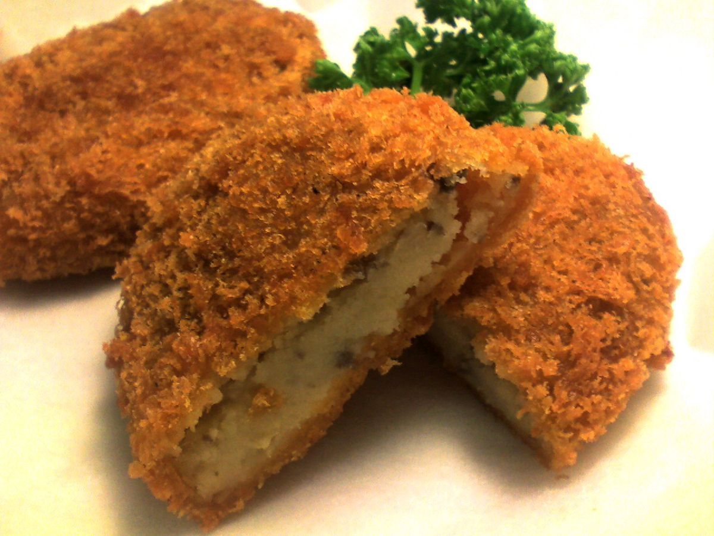

Odin's Japanese Korokke (Croquette)

Description
Meat and potatoes what's not to love? Oh wait, what's that? It's fried and has a crunchy exterior!? Take my money please.
Korokke (Croquette) is one of Japan's popular foods. This simple recipe is sure to delight. Flavorful, crunchy on the outside, soft and hot in the middle, friends and families will surely want for more.
Ingredients
- 3 Large Potatoes (Russet Potatoes work's best)
- 1 small onion minced
- 250g beef minced
- 1 tbsp soy sauce
- 1 tbsp mirin
- 3 tbsp mayonnaise (Japanese Kewpie recommended)
- 2 eggs, whisked
- plain flour
- breadcrumbs
- tonkatsu sauce (You can use any other sauce you like)
- shredded cabage, or salad of choice
- salt and pepper to taste
Steps
- Boil your potatoes till soft. Don't forget to season the water with salt.
- In a pan, sauté the onions over high heat. Add a pinch of salt to help them cook faster.
- Add in the beef and stir till you get good color on your meat. Color = flavour.
- Add in the soy sauce, mirin and pepper. Simmer until most of the liquid has evaporated.
- Going back to your potatoes, drain the water out and place back on heat. This step helps remove most of the moisture.
- Mash your potatoes, add the cooked beef in as well as the mayonnaise and mix well. At this point, let it cool.
- Once the mixture has cooled, start shaping your portions
- Take some of the mixture in your hands and start rolling into balls.
- Flatten the ball to create a disc. It's best not to make the disc too thick for better crispness.
- Coat the Korokke mixture in flour and place in the fridge for a minimum of 15 mins. This step helps them keep their shape.
- Take out your Korokke discs. Dip them in the egg, make sure to cover the entire disc. Dip them bag in flour, then the egg, then finally the breadcrumbs.
- On a deep enough pan, heat up some oil. Make sure you use medium-high heat to prevent burning. Drop in a piece of breadcrumb, if the oil bubbles around then it's ready
- Place your Korokkes one at a time. Make sure not to overcrowd the pan.
- Your Korokokes are ready once they turn a nice golden brown color.
- Drain on a wire rack or kitchen paper.
- Serve with shredded cabbage or salad of choice. Use sauce as liked.